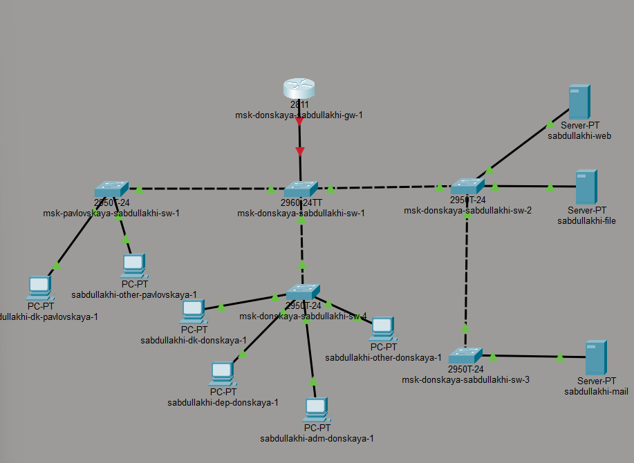
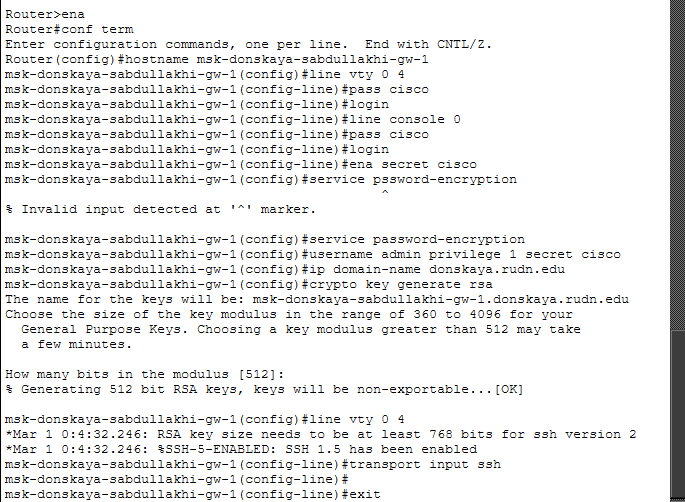
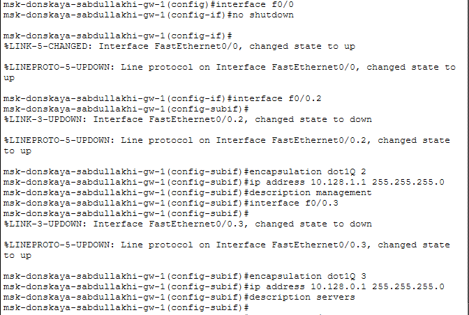
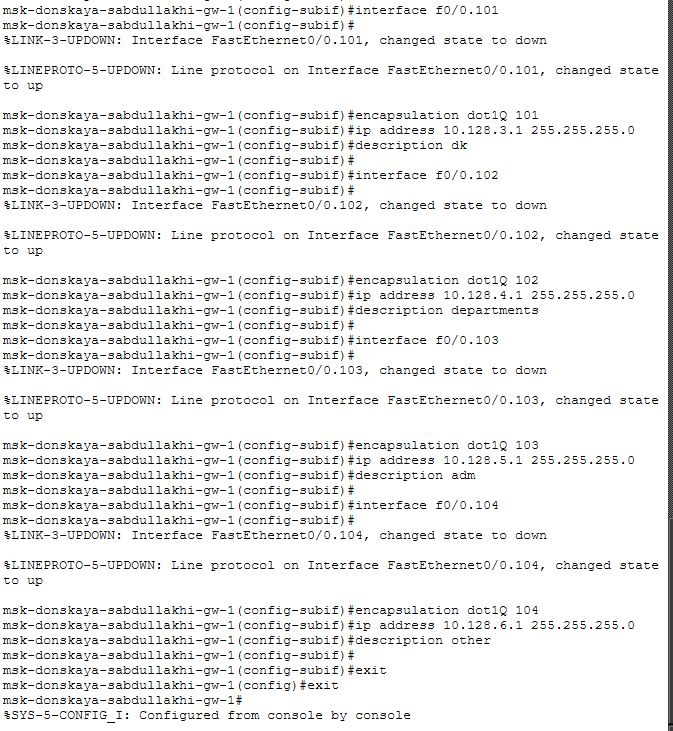
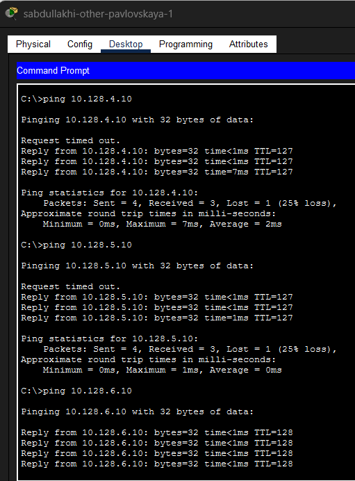
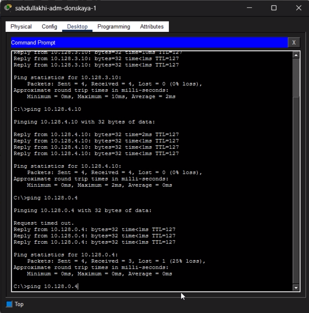
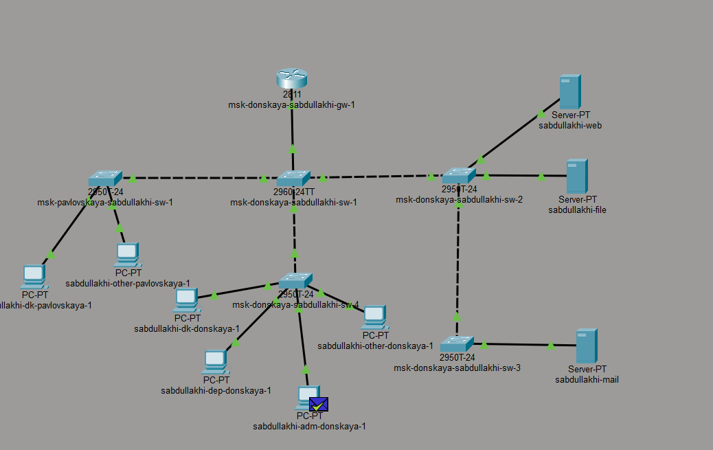
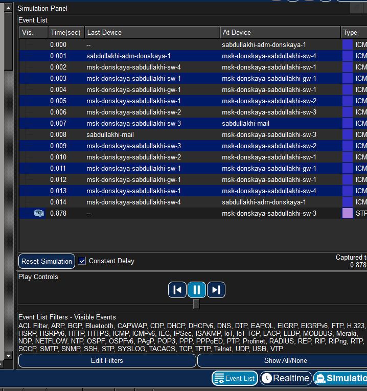
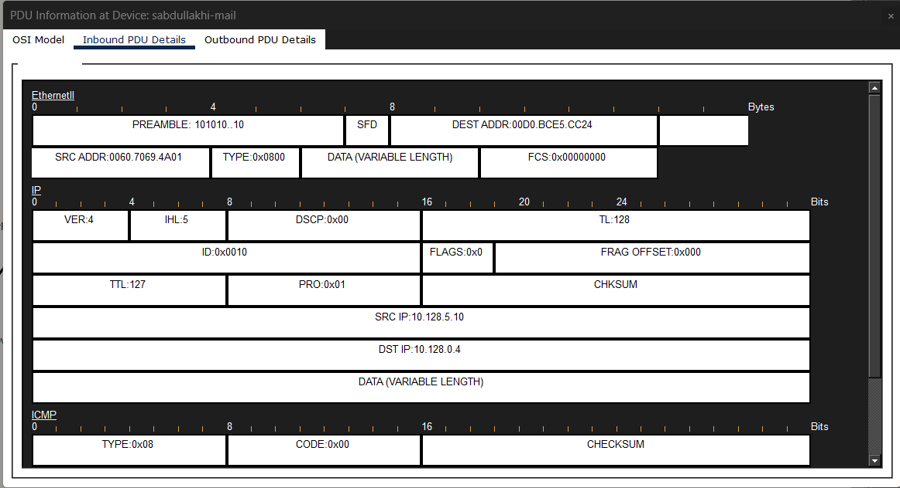

Настроить статическую маршрутизацию между виртуальными локальными сетями (VLAN) в среде Cisco Packet Tracer с использованием технологии RouteronaStick и провести анализ передачи данных между различными VLAN.









В ходе лабораторной работы в Cisco Packet Tracer была построена сеть с маршрутизатором Cisco 2811, коммутаторами Cisco 2960, ПК и серверами. Маршрутизатор подключён к коммутатору через trunk-соединение для передачи трафика нескольких VLAN.
На маршрутизаторе выполнена базовая настройка (имя, пароли, SSH) и созданы виртуальные подинтерфейсы с IP-адресами для маршрутизации между VLAN.
Проверка командой ping подтвердила успешную передачу данных между VLAN. В режиме Simulation изучен процесс прохождения ICMP-пакета и структура кадров Ethernet, IP и ICMP.